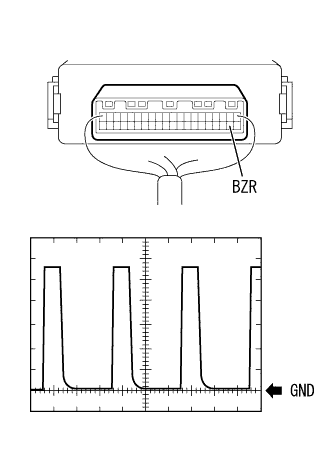
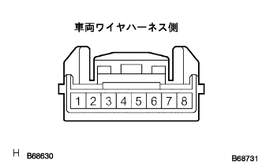

Smart Door Tsukushi System Smart Door An Rock and Lock are not operated |
| Step 1 | Check if the door is locked and unlocked by manual operation |
Check if the door control relay associate is output to the door lock ASSY or the door lock ASSY works.
|
| ||||
| OK | |
| Step 2 | Diag mode inspection |
Preparation before inspection
Use SST (TASCAN) to connect the tester plus to the smart ECU buzzer (BZR) terminal, and the negative of the tester to the body earth.
Transition to diagme mode
Waveform inspection
|  |
Use SST (Tascan) to measure the waveform between the terminals.
| item | Content |
|---|---|
| Measuring terminal | BZR -Body Earth |
| Instrument set | 2V/Div, 200ms/Div |
| Measurement conditions | Carry a smart key and enter the detection area (70-150cm from the driver's door-out side door handle) outside the detection area |
|
| ||||
| OK | ||
| ||
| Step 3 | Door electrical key Oscillator inspection (+B, GND) |
Door electrical oxylator key voltage / conduction inspection
Cut the connector of the door electrical oxyillator key.
|  |
Use SST (Toyota Electrical Tester) to inspect the voltage and conductor between the door electrical oxylator key vehicle Wire harness side connector ← → body earth.
| Measuring terminal | Measurement conditions | standard |
|---|---|---|
| 8 (GND) ← → Body Earth | Always | There is an conductor |
| 1 (+B) ← → Body Earth | Always | 10-14V |
|
| ||||
| OK | |
| Step 4 | Door electrical key Oscillator inspection (CLG) |
Door electrical oxyillator key CLG waveform inspection
 |
Use an oscilloscope to check the waveform between the 4 (CLG) terminal of the door electrical oxylicer key.
| Terminal number | item | Measurement conditions | standard |
|---|---|---|---|
| 4 (Clg1) ← → Body Earth | HZ
| Ignitsushi -si Onti Tsutsuchi OFF → Start engine | HZThere is output → None |
|
| ||||
| NG | |
| Step 5 | Wire harness inspection (CLG1) |
Smart Key Compiyuta ASSY ← → Door Electrical Oxylator Key Inspection Inspection
Separate the smart key compiya ASSY and the door electrical oxylator key.
Use SST (Toyota Electrical Tester) to inspect the conduction between the smart key computa ASSY 17 (CLG1) terminal ← → door electrical oxyelator key 4 (CLG1) terminals.
|
| ||||
| OK | ||
| ||